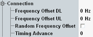

Common Connection Settings
This section describes the common settings of the connection parameters.

General connection parameters
Sets the positive or negative offset to the center frequency of the uplink/downlink traffic channel.
This parameter is suspended if the frequency offset for all channels is set, see "Frequency Offset".
Remote command:- OFF: fixed frequency offset is applied
- ON: alternating frequency offset with ± "Frequency Offset" values is applied
Option R&S CMW-KS210 required.
Remote command:Specifies the value, which the MS uses to advance its UL timing to compensate for propagation. Timing advance is specified in 3GPP TS 44.018, section 10.5.2.40 for circuit switched and in 3GPP TS 44.060, section 12.12 for packet switched.
Option R&S CMW-KS210 required.
Remote command: